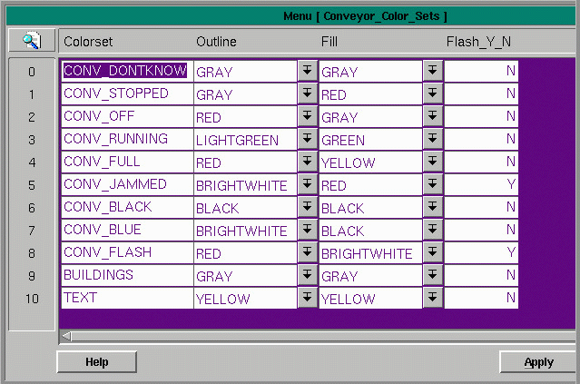
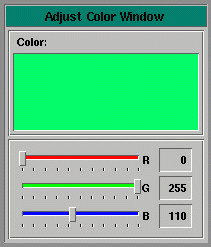

The conveyor colorsets table specifies the colors used to draw the parts when the parts are in the various states of operation.

The fields for the Conveyor Colorsets table are:
Colorset - the name of the standard or user-defined colorset
Outline - the outline color
Fill - the fill color
Flash_Y_N - flash flag, the part flashes on and off if set to 'Y'
| Some of the Standard Color Sets | Used for: |
| CONV_DONTKNOW | parts that are in an undetermined state |
| CONV_STOPPED | parts that are off (low) |
| CONV_RUNNING | parts that are on (high) |
| CONV_FULL | parts that are full |
| CONV_JAMMED | parts that are jammed |
| CONV_BLACK | parts that are invisible on the screen (Ex. e-stops that are inactive) |
| CONV_BLUE | non powered parts |
| CONV_FLASH | parts that continually flash |
| CONV_GRAVITY | gravity conveyor |
To Change A Color
1.Left mouse click on the pull down symbol in the Outline or Fill Column.
2.Double click on the desired color.
|
To Change A Shade of Color
1. Double right click on the selection you wish to change. This will display
the Color Names Menu. |  |
Copyright © 2001 Fortna Inc. All rights reserved.